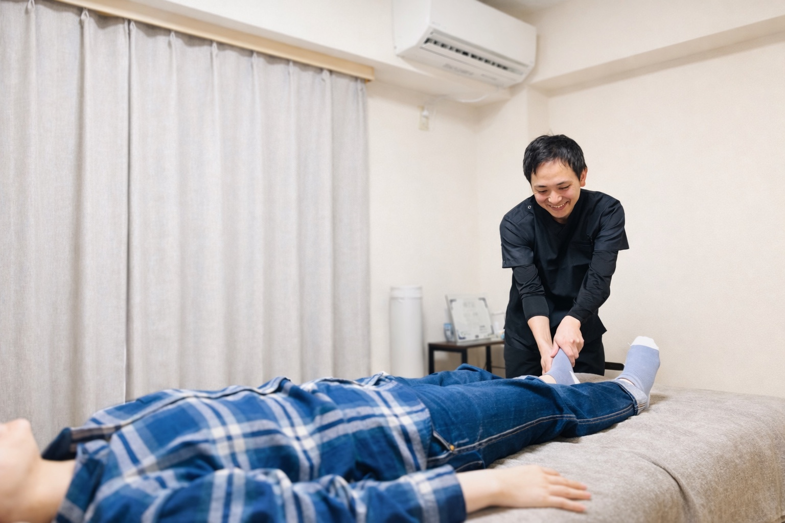

1.まず話をしっかり聞くこと
いつから痛いのか、どんな動きでつらいのか、何ができなくて困っているのか、病院では何と言われたのか。
痛みの背景は人それぞれです。同じ膝痛でも、原因や生活で困っていることは違います。
だから、最初のカウンセリングを大切にしています。
整体院ひざこぞうで施術を担当している、川上卓哉です。
このページでは、私がどのような想いで整体院ひざこぞうを始めたのか、なぜ膝や腰など足腰の不調に向き合っているのかをお伝えします。
技術や資格だけではなく、「どんな人が施術するのか」は、初めて来院される方にとってとても大切だと思っています。少し長くなりますが、私の考え方や人柄が少しでも伝われば嬉しいです。

はじめまして。整体院ひざこぞう代表の川上卓哉です。
私はこれまで、接骨院・整骨院・整体院で、外傷から慢性的な痛みまで幅広く施術に携わってきました。
その中で強く感じてきたのは、膝や腰、股関節などの足腰の不調は、単に「痛い場所だけ」を見ても良くなりにくいということです。
膝が痛い方でも、原因をたどると股関節や足首、姿勢、歩き方、筋肉の使い方が関係していることがあります。腰痛や坐骨神経痛でも、同じように体全体の使い方が関係していることがあります。
だから当院では、痛む場所だけを見て終わりにしないことを大切にしています。「なぜそこに負担がかかっているのか」「どうすれば日常生活で痛みが戻りにくくなるのか」を一緒に整理していきます。
初めての場所に相談するのは、不安もあると思います。だからこそ、強引な施術や無理な提案はせず、まずは今のお身体の状態をわかりやすくお伝えすることを大切にしています。

「ひざこぞう」という名前には、2つの想いを込めています。
1つ目は、私自身が膝を含めた足腰の施術に力を入れてきたことです。
これまで多くの方のお身体を見てきた中で、膝・腰・股関節・足首など、足腰の不調は、生活の自由さに関わると感じてきました。
階段を降りるのが怖い。
歩き始めに痛む。
買い物や旅行に行くのが不安。
正座やしゃがむ動作がつらい。
こうした悩みは、単なる痛みではなく、その方の生活そのものに影響します。
だからこそ、足腰の不調にしっかり向き合いたいと思いました。
2つ目は、「もう一度、わんぱくに動ける身体を取り戻してほしい」という想いです。
子どもの頃の“ひざこぞう”は、転んだり、走ったり、遊んだり、夢中で動いていた象徴のようなものだと思っています。
もちろん大人になれば、若い頃とまったく同じように動く必要はありません。
それでも、もう一度、安心して歩ける身体へ向かっていきたい。
「また歩くのが楽しくなった」「外に出るのが怖くなくなった」「自分の足で動ける自信が戻ってきた」そう感じていただける方を増やしたい。
そんな想いから、整体院ひざこぞうという名前にしました。
足腰の痛みは、生活の質に直結します。
膝が痛いと階段が不安になります。
腰が痛いと長く歩くことがつらくなります。
股関節や坐骨神経痛のような症状があると、外出そのものが億劫になることもあります。
痛みが長引くと、いつの間にか行動範囲が狭くなり、「本当は行きたいけど、やめておこう」「痛くなるかもしれないから、無理しないでおこう」と、やりたいことを我慢する場面が増えてしまいます。
私は、そういう方を見るたびに、ただ痛みを一時的に楽にするだけでは不十分だと感じてきました。
大切なのは、痛みの出にくい身体の使い方を身につけ、日常生活の中で安心して動ける状態を目指すことです。
当院では、MSMメソッドをもとに、硬くなった関節や筋肉を整えること、眠っている筋肉を使えるようにすること、歩き方や立ち方など日常の動作を見直すことを組み合わせながら、
痛みが戻りにくい身体づくりを目指します。
私は柔道整復師の国家資格を取得後、接骨院・整骨院・整体院で経験を積んできました。
接骨院では、骨折・脱臼・捻挫・打撲・挫傷など、急性のケガに多く関わりました。
整骨院では、エコー検査なども含めて、身体の状態を確認しながら施術する経験を積みました。
その後、整体院では慢性的な痛みや、長く続く不調に悩む方を多く担当してきました。
その中で感じたのは、慢性的な痛みほど「その場だけ楽にする」だけでは足りないということです。
施術直後は楽になっても、普段の姿勢や歩き方、筋肉の使い方が変わらなければ、また同じところに負担がかかってしまいます。
だから私は、施術だけでなく、状態説明・セルフケア・動作指導まで含めて、その方の生活に合った形でサポートすることを大切にしています。
私自身も、学生時代にサッカーで膝を痛め、思うように動けない時期がありました。
好きなことができない。歩くのもつらい。周りと同じように動けない。
そういう経験があるからこそ、膝や足腰の痛みで不安を感じている方の気持ちは、少しはわかるつもりです。
また、20歳の頃にはクローン病を経験し、入退院を繰り返した時期もありました。
その経験から、健康は当たり前ではないこと、身体の不調が日常生活や気持ちにまで影響することを強く実感しました。
だからこそ私は、ただ症状を見るのではなく、その方の生活背景や不安にも目を向けたいと思っています。
いつから痛いのか、どんな動きでつらいのか、何ができなくて困っているのか、病院では何と言われたのか。
痛みの背景は人それぞれです。同じ膝痛でも、原因や生活で困っていることは違います。
だから、最初のカウンセリングを大切にしています。
専門用語ばかりで説明されても、不安は解消されません。
当院では、今の身体がどうなっているのか、なぜ痛みが出やすいのか、これから何を目指すのかを、できるだけわかりやすい言葉でお伝えします。
強い刺激が苦手な方もいます。運動が苦手な方もいます。通院ペースや生活環境も人それぞれです。
だから当院では、優しく、わかりやすく、無理に押しつけない姿勢を大切にしています。
その方の状態に合わせて、できることから一緒に進めていきます。
初めて整体院に来るときは、不安があって当然です。
「本当に相談していい症状なのかな」「強い施術をされないかな」「通わないといけないと言われるのかな」
そう思う方もいると思います。
当院では、まずお身体の状態を確認し、今どのような負担がかかっているのかを説明します。
そのうえで、必要な施術やセルフケアをご提案します。納得できないまま進めることはありません。
膝、腰、股関節、坐骨神経痛など、足腰の痛みや不安でお悩みの方は、まずは一度ご相談ください。
あなたがもう一度、自分の身体に前向きになれるように、丁寧にサポートします。
痛みがある生活に慣れてしまうと、少しずつ行動範囲が狭くなってしまいます。
でも、身体の状態を整理し、正しい順番で向き合っていけば、まだできることはあります。
「この痛みとずっと付き合うしかない」と諦める前に、一度ご相談ください。
整体院ひざこぞうは、あなたがもう一度安心して歩き、動ける毎日を目指してサポートします。